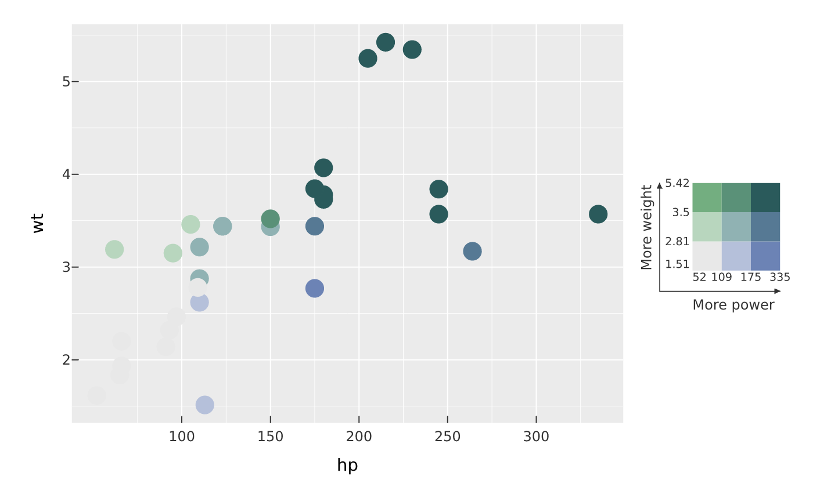
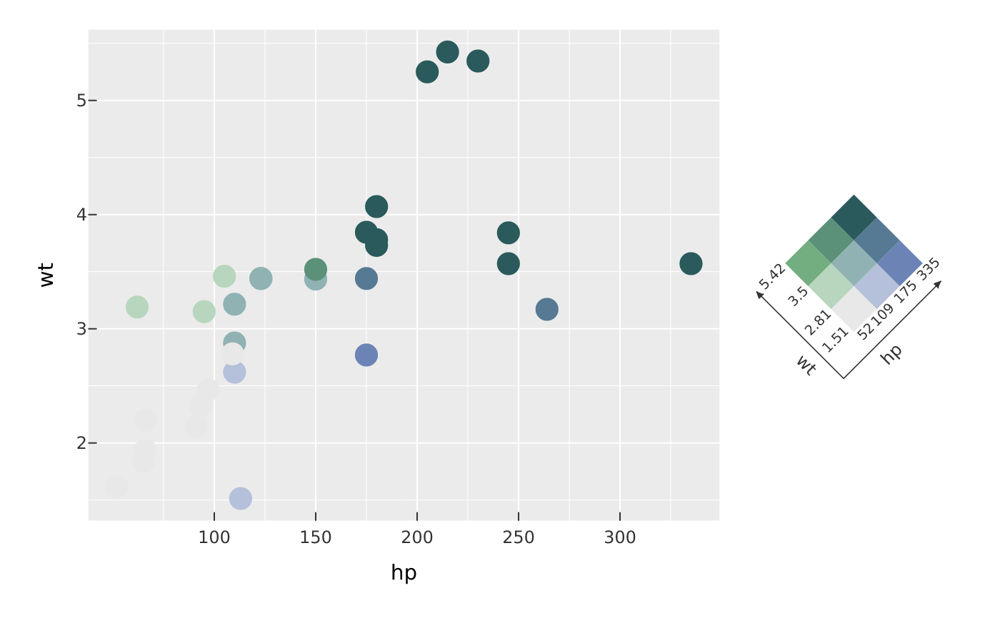

guide_bivariate() draws a bivariate colour scale as a square grid of
swatches: the x variable's classes run left to right along the bottom, the
y variable's classes bottom to top up the side, each axis with its title
and an arrow pointing towards "more". When the classes come from
bi_class(), each axis is labelled with its class breaks at the swatch
edges. rotate = TRUE turns the grid 45 degrees into a diamond, low-low at
the bottom and high-high at the top. It is the default guide of
scale_fill_bivariate(); use it through guides() to retitle the axes or
resize the swatches without respelling the scale. Asking for it on a fill that
maps a bi_class()-style column makes that scale bivariate.
Usage
guide_bivariate(
title = NULL,
xlab = NULL,
ylab = NULL,
key.size = NULL,
labels = TRUE,
rotate = FALSE
)Arguments
- title
A title above the grid, or
NULL(default) for none.- xlab, ylab
The axis titles, or
NULLto keep the scale's (or the variable names recorded bybi_class()).- key.size
Side of one swatch, in millimetres.
NULL(default) uses 1.5 x the theme'slegend.key.size, widened to fit the break labels.- labels
Label the swatch edges with the class breaks
bi_class()recorded (defaultTRUE). A scale without recorded breaks (a hand-made class column) has none to show.- rotate
Turn the grid 45 degrees, so the classes read as a diamond with high-high at the top (default
FALSE).
Value
A guide specification for guides().
See also
Other bivariate:
bi_class(),
bi_pal(),
scale_fill_bivariate()
Examples
d <- bi_class(mtcars, hp, wt)
vplot(d) |>
mark_point(x = hp, y = wt, color = bi_class, size = 2) |>
guides(color = guide_bivariate(xlab = "More power", ylab = "More weight"))

# the diamond form
vplot(d) |>
mark_point(x = hp, y = wt, color = bi_class, size = 2) |>
guides(color = guide_bivariate(rotate = TRUE))
